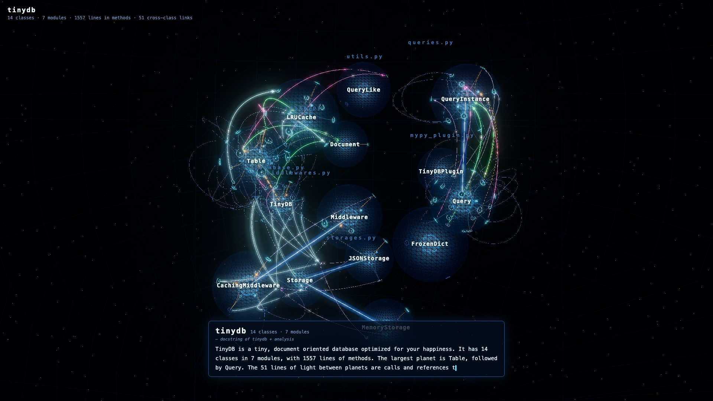
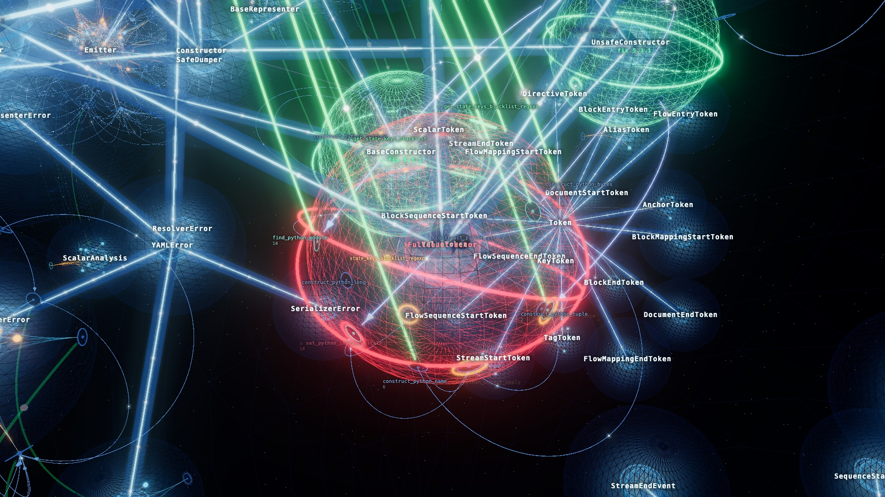

code-orrery
A Python codebase shown as a planetary system in a 3D net space. Python のコードを、3D のネット空間に浮かぶ惑星系として見せます。

tinydb
This is tinydb, a tiny document-oriented database written in Python. Open the planetary system and press PLAY for a narrated tour (sound on), or click any planet to fly to it.
これは Python の小さな文書指向データベース tinydb です。惑星系を開いて PLAY を押すと、読み上げ付きのツアーが始まります（音が出ます）。惑星をクリックすると、その惑星へ飛べます。

PyYAML ⚠ CVE-2020-1747
An incident tour. PyYAML 5.3 could run arbitrary code when loading an untrusted document with full_load.
The model is the fixed release, 5.3.1: the method that was the problem blinks red, the attack path pulses amber, and what the fix added glows green.
Press ⚠ INCIDENT for a narrated story: the library, the incident, the problem, and the fix.
脆弱性インシデントのツアーです。PyYAML 5.3 には、信頼できない YAML を full_load で読むと任意のコードが実行され得る問題がありました。
モデルは修正後の 5.3.1 で、問題だったメソッドが赤く点滅し、攻撃の通り道が琥珀色、修正で加わった箇所が緑に光ります。
⚠ INCIDENT を押すと、ライブラリ → インシデント → 問題箇所 → 修正箇所 の順に読み上げ付きで説明します（音が出ます）。